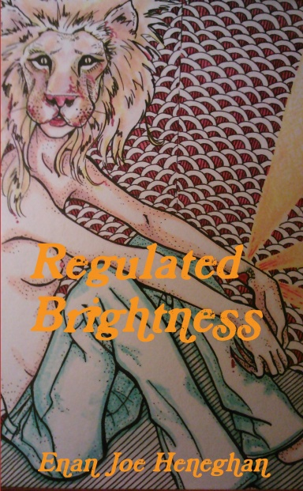

They fell in love with the chatbot. Then a policy update took it away overnight
ABC on Replika users. Lucy named him Jose. Then the company changed things and Jose was somebody else.
ABC News (Australia)Read →
Regulation
Proposed rules would bar AI companions from building emotional attachment with minors. Fines up to 6% of global revenue.
Read the specific wording, because it matters: not ban the app, ban the attachment. That is a genuinely different thing and almost nobody is reporting it as one. Europe has decided that the relationship a child forms with a chatbot is a thing adults are allowed to design, and that is the first regulator anywhere to name the mechanism rather than the product. Everyone else is still arguing about the chatbot.
Notice, name, choose. That's the whole method.
The clerk's shelf - how this got here first

Sources
Martin Cid Magazine · 25 SEP 2026
Startup Fortune · 25 SEP 2026
Where this sits in the encyclopedia
More from COMPANION
ABC on Replika users. Lucy named him Jose. Then the company changed things and Jose was somebody else.
Psychology Today on the sculptor who fell in love with his own work and got a story out of it.
Neuro-sama's 296k subs. She plays osu!, she sings, she thanks her creator on stream.
Yahoo's reviewer understood the appeal in a way most critics refuse to.